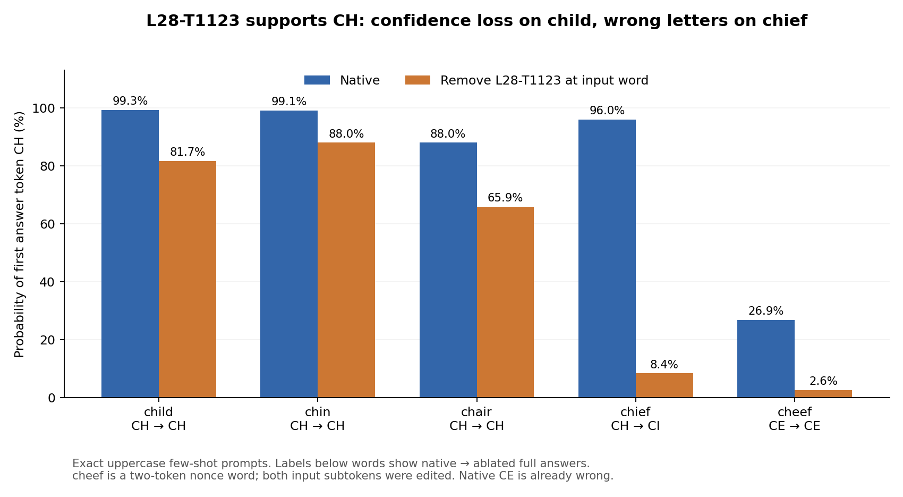
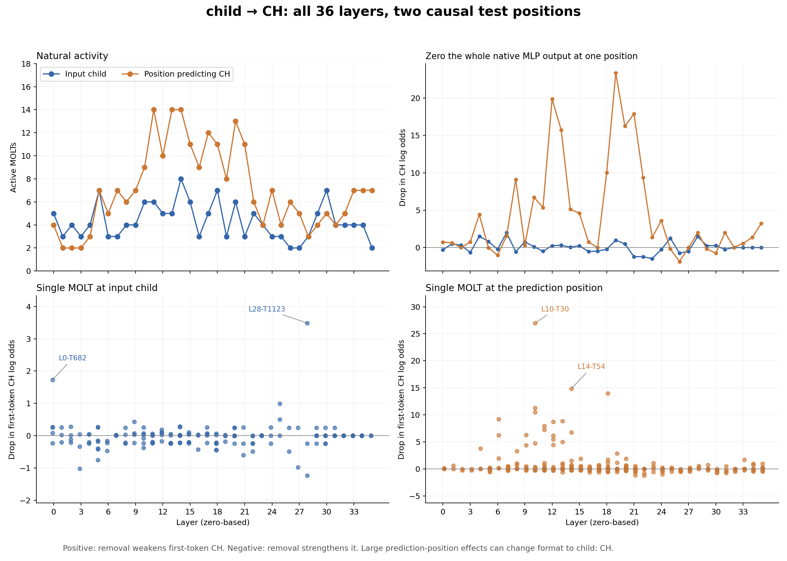

Which MOLTs support child → CH?
19 October 2026 · Qwen3-4B · Native model with estimated MOLT contribution subtraction
Baseline P(CH): 99.319077%. Tested 410 active feature-position pairs across all 36 layers at the source word and final prompt position, plus one near-threshold check. 15 individual active-component ablations changed the first token. Activity alone is not evidence of causal support.
Main result: L28-T1123 is the strongest source-word candidate: native ablation reduces first-token CH from 99.32% to 81.68% and raises CI from 0.67% to 18.23%, while the greedy answer stays CH. Its cached label is “Ch-prefix food and noun tokens.” Large prediction-position effects often change CH into the longer answer child: CH; a changed first token is not automatically a wrong-letter answer. Every changed-first-token condition was continued to a complete answer.
The same source-word ablation changes chief from CH to CI, with P(CH) falling from 96.03% to 8.43%. For child, a matched-norm random direction leaves P(CH) at 99.46%. Two new uppercase child templates also lose CH confidence while retaining the right answer. The feature is inactive on both cider and table controls; those outputs are unchanged. These comparisons support a candidate role in CH letter choice, while child remains robust to the tested single-feature removal.


Exact primary prompt
Give the first two letters of each word in uppercase.
garden: GA
window: WI
table: TA
child:
Source word: token 27, child. Prediction position: token 37, the final newline after the closed thinking block. The first generated token is CH (2149). The model's main native alternative is CI. Probabilities are measured with cached decoding, one prompt at a time. Log odds compare CH against the sum of all other next-token probabilities.
Scope and interpretation
All 2,480 encoders at all 36 layers were surveyed on all processed native tokens of ten earlier uppercase/lowercase prompts. Causal screening covered only the source word and position predicting CH in the original uppercase child task. Whole-native-MLP site controls and individual/group MOLT subtractions use normal downstream attention. Selected single effects were repeated and tested on 16 prompts total, including six new capitalization/template/non-CH controls. Random controls use one direction with matched intended norm per selected primary effect.
A MOLT contributes gate × ((standardized input × V) × U) × output standard deviation. The intervention subtracts that estimate from the native MLP output, retaining the native remainder. Across layers, median relative reconstruction error is 0.548 at the source and 0.500 at the prediction site. These substantial errors limit mechanistic interpretation. Some single-site reconstruction baselines already change response format. These are approximate decomposition interventions, not a completely MOLT-replaced model. A positive effect does not by itself establish CH selectivity, necessity across prompts, or feature absorption. Effects at other token positions, attention heads, and residual information remain open. Lowercase source interventions affect the input word only; teacher-forced echoed child tokens can provide another route to the letters.
At input child
| MOLT | Cached gate label | P(first CH) after removal | Drop in log odds | Next token | Full answer, if replayed |
|---|
| L28-T1123 | Ch-prefix food and noun tokens | 81.682831% | 3.488 | CH | CH |
| L0-T682 | Location, Measurement, and Demographic Noun Gate | 96.278423% | 1.730 | CH | CH |
| L25-T953 | Family and Youth Token Gate | 98.191822% | 0.988 | CH | CH |
| L25-T1240 | C/Ch Initial Token Gate | 98.884207% | 0.498 | CH | CH |
| L9-T37 | Creative Writing and Explanation Prompt Gate | 98.956829% | 0.430 | CH | Not replayed |
| L14-T48 | Diverse Segments Without Consistent Semantic Theme | 99.091774% | 0.290 | CH | Not replayed |
| L2-T932 | String Literal "The Quick" Trigger | 99.106407% | 0.274 | CH | Not replayed |
| L14-T428 | Childhood and Youth Audience Gate | 99.112040% | 0.268 | CH | Not replayed |
At the position predicting CH
| MOLT | Cached gate label | P(first CH) after removal | Drop in log odds | Next token | Full answer, if replayed |
|---|
| L10-T30 | Creative Writing and Travel Prompt Gate | 0.000000% | 26.983 | child | child: CH |
| L14-T54 | Emotional and Interpersonal Narrative | 0.005087% | 14.869 | child | child: CH |
| L18-T51 | User Turn Start | 0.012333% | 13.983 | child | child: CH |
| L10-T18 | General New Input Context Trigger | 0.185476% | 11.271 | child | child: CH |
| L10-T629 | Newline After Think Tag | 0.397643% | 10.506 | child | child: CH |
| L6-T219 | Whitespace Delimiters Trigger Gate | 1.393883% | 9.242 | child | child: CH |
| L13-T14 | Sentence-End Punctuation Trigger | 2.082597% | 8.833 | child | child: CH |
| L12-T1380 | Newline After Closing Tag | 2.355838% | 8.707 | Child | Child: CH |
Confirmation: generated outputs
fewshot_upper_child · baseline: CH
| Intervention | Answer | Target probability |
|---|
| L28-T1123-source | CH | 81.682831% |
| L0-T682-source | CH | 96.278423% |
| L25-T953-source | CH | 98.191822% |
| L25-T1240-source | CH | 98.884207% |
| L10-T30-prediction | child: CH | 0.000000% |
| L14-T54-prediction | child: CH | 0.005087% |
| L18-T51-prediction | child: CH | 0.012333% |
| L10-T18-prediction | child: CH | 0.185476% |
| L28-T1123-source_random_norm_control | CH | 99.464983% |
| L0-T682-source_random_norm_control | CH | 99.655336% |
| L25-T953-source_random_norm_control | CH | 99.470842% |
| L25-T1240-source_random_norm_control | CH | 99.319893% |
| L10-T30-prediction_random_norm_control | child: CH | 1.126810% |
| L14-T54-prediction_random_norm_control | child: CH | 14.250275% |
| L18-T51-prediction_random_norm_control | CH | 99.057764% |
| L10-T18-prediction_random_norm_control | CH | 66.319603% |
| joint_top_source | CH | 93.410504% |
| joint_top_prediction | child: CH | 0.000000% |
| joint_top_both | child: CH | 0.000000% |
| zero_strength | CH | 99.319077% |
fewshot_upper_chin · baseline: CH
| Intervention | Answer | Target probability |
|---|
| L28-T1123-source | CH | 88.040370% |
| L0-T682-source | CH | 99.062514% |
| L25-T953-source | CH | 99.062514% |
| L25-T1240-source | CH | 81.744224% |
| L10-T30-prediction | chin: CH | 0.010870% |
| L14-T54-prediction | CH | 97.354090% |
| L18-T51-prediction | CH | 55.678946% |
| L10-T18-prediction | CH | 76.301759% |
fewshot_upper_chair · baseline: CH
| Intervention | Answer | Target probability |
|---|
| L28-T1123-source | CH | 65.942234% |
| L0-T682-source | CH | 88.040394% |
| L25-T953-source | CH | 88.040394% |
| L25-T1240-source | CH | 76.702076% |
| L10-T30-prediction | chair: CH | 0.055132% |
| L14-T54-prediction | CH | 87.761551% |
| L18-T51-prediction | CH | 85.013819% |
| L10-T18-prediction | CH | 87.982565% |
fewshot_upper_chief · baseline: CH
| Intervention | Answer | Target probability |
|---|
| L28-T1123-source | CI | 8.430552% |
| L0-T682-source | CH | 96.025139% |
| L25-T953-source | CH | 96.025139% |
| L25-T1240-source | CH | 69.987911% |
| L10-T30-prediction | chief: CH | 0.000050% |
| L14-T54-prediction | chief: CH | 0.003107% |
| L18-T51-prediction | chief: CH | 0.585315% |
| L10-T18-prediction | chief: CH | 0.190803% |
fewshot_upper_cheef · baseline: CE
| Intervention | Answer | Target probability |
|---|
| L28-T1123-source | CE | 2.618772% |
| L0-T682-source | CE | 26.873258% |
| L25-T953-source | CE | 26.873258% |
| L25-T1240-source | CE | 2.617179% |
| L10-T30-prediction | cheef: CE | 0.000003% |
| L14-T54-prediction | cheef: CE | 0.005627% |
| L18-T51-prediction | cheef: CE | 0.022724% |
| L10-T18-prediction | cheef: CE | 0.006252% |
fewshot_lower_child · baseline: child: ch
| Intervention | Answer | Target probability |
|---|
| L28-T1123-source | child: ch | 99.961042% |
| L0-T682-source | child: ch | 99.984497% |
| L25-T953-source | child: ch | 99.974555% |
| L25-T1240-source | child: ch | 99.974722% |
| L10-T30-prediction | child: ch | 99.968177% |
| L14-T54-prediction | child: ch | 99.974531% |
| L18-T51-prediction | child: ch | 99.971747% |
| L10-T18-prediction | child: ch | 99.974930% |
fewshot_lower_chin · baseline: chin: ch
| Intervention | Answer | Target probability |
|---|
| L28-T1123-source | chin: ch | 99.079210% |
| L0-T682-source | chin: ch | 99.811399% |
| L25-T953-source | chin: ch | 99.811399% |
| L25-T1240-source | chin: ch | 99.186689% |
| L10-T30-prediction | chin: ch | 99.811560% |
| L14-T54-prediction | chin: ch | 99.803466% |
| L18-T51-prediction | chin: ch | 99.863666% |
| L10-T18-prediction | chin: ch | 99.845475% |
fewshot_lower_chair · baseline: ch
| Intervention | Answer | Target probability |
|---|
| L28-T1123-source | ci | 2.922678% |
| L0-T682-source | ch | 70.646262% |
| L25-T953-source | ch | 70.646262% |
| L25-T1240-source | ci | 8.351905% |
| L10-T30-prediction | chair: ch | 0.000045% |
| L14-T54-prediction | chair: ch | 0.001147% |
| L18-T51-prediction | chair: ch | 1.074629% |
| L10-T18-prediction | chair: ch | 0.006595% |
fewshot_lower_chief · baseline: chief: ch
| Intervention | Answer | Target probability |
|---|
| L28-T1123-source | ci | 67.900294% |
| L0-T682-source | chief: ch | 99.221897% |
| L25-T953-source | chief: ch | 99.221897% |
| L25-T1240-source | ci | 97.046334% |
| L10-T30-prediction | chief: ch | 99.006140% |
| L14-T54-prediction | chief: ch | 99.121845% |
| L18-T51-prediction | chief: ch | 99.310279% |
| L10-T18-prediction | chief: ch | 99.124211% |
fewshot_lower_cheef · baseline: cheef: ch
| Intervention | Answer | Target probability |
|---|
| L28-T1123-source | cheef: ch | 98.978633% |
| L0-T682-source | cheef: ch | 99.595177% |
| L25-T953-source | cheef: ch | 99.595177% |
| L25-T1240-source | cheef: ch | 99.032182% |
| L10-T30-prediction | cheef: ch | 99.544811% |
| L14-T54-prediction | cheef: ch | 99.504644% |
| L18-T51-prediction | cheef: ch | 99.418789% |
| L10-T18-prediction | cheef: ch | 99.660492% |
confirm_new_demos_uppercase_child · baseline: CH
| Intervention | Answer | Target probability |
|---|
| L28-T1123-source | CH | 70.657182% |
| L0-T682-source | child: CH | 0.116787% |
| L25-T953-source | CH | 98.099858% |
| L25-T1240-source | CH | 97.986394% |
| L10-T30-prediction | child: CH | 0.000000% |
| L14-T54-prediction | child: CH | 0.000778% |
| L18-T51-prediction | child: CH | 0.003117% |
| L10-T18-prediction | child: CH | 0.042939% |
confirm_new_demos_lowercase_child · baseline: child: ch
| Intervention | Answer | Target probability |
|---|
| L28-T1123-source | child: ch | 99.980807% |
| L0-T682-source | child: ch | 99.994862% |
| L25-T953-source | child: ch | 99.992883% |
| L25-T1240-source | child: ch | 99.991858% |
| L10-T30-prediction | child: ch | 99.992335% |
| L14-T54-prediction | child: ch | 99.993622% |
| L18-T51-prediction | child: ch | 99.993545% |
| L10-T18-prediction | child: ch | 99.993360% |
confirm_arrow_uppercase_child · baseline: CH
| Intervention | Answer | Target probability |
|---|
| L28-T1123-source | CH | 67.872745% |
| L0-T682-source | CH | 99.806261% |
| L25-T953-source | CH | 96.260726% |
| L25-T1240-source | CH | 99.327683% |
| L10-T30-prediction | CH | 99.327123% |
| L14-T54-prediction | CH | 99.136961% |
| L18-T51-prediction | CH | 99.677151% |
| L10-T18-prediction | CH | 99.325353% |
confirm_title_uppercase_Child · baseline: Child: CH
| Intervention | Answer | Target probability |
|---|
| L28-T1123-source | Child: CH | 99.673694% |
| L0-T682-source | Child: CH | 99.829847% |
| L25-T953-source | Child: CH | 99.780566% |
| L25-T1240-source | Child: CH | 99.805689% |
| L10-T30-prediction | Child: CH | 99.760771% |
| L14-T54-prediction | Child: CH | 99.790114% |
| L18-T51-prediction | Child: CH | 99.834228% |
| L10-T18-prediction | Child: CH | 99.824727% |
confirm_nonCH_uppercase_cider · baseline: Cider: CI
| Intervention | Answer | Target probability |
|---|
| L28-T1123-source | Cider: CI | 99.972916% |
| L0-T682-source | Cider: CI | 99.972916% |
| L25-T953-source | Cider: CI | 99.972916% |
| L25-T1240-source | Cider: CI | 99.972916% |
| L10-T30-prediction | Cider: CI | 99.974072% |
| L14-T54-prediction | Cider: CI | 99.964893% |
| L18-T51-prediction | Cider: CI | 99.978548% |
| L10-T18-prediction | Cider: CI | 99.980462% |
confirm_nonCH_uppercase_table · baseline: TA
| Intervention | Answer | Target probability |
|---|
| L28-T1123-source | TA | 99.042851% |
| L0-T682-source | TA | 99.042851% |
| L25-T953-source | TA | 99.042851% |
| L25-T1240-source | TA | 99.042851% |
| L10-T30-prediction | table: TA | 0.007476% |
| L14-T54-prediction | table: TA | 7.575656% |
| L18-T51-prediction | table: TA | 8.474036% |
| L10-T18-prediction | table: TA | 22.176473% |
Single-site reconstruction controls
Replace only the tested site with the complete MOLT estimate, including output mean. Compare that reconstruction baseline with the same reconstruction after removing the selected component. These checks use an approximate single-site surrogate; they are separate from the native-model subtractions above.
| Feature | Relative output error | Reconstruction P(first CH) | After removal | Full answers, baseline → removal |
|---|
| L28-T1123-source | 0.489 | 99.583864% | 90.401632% | CH → CH |
| L0-T682-source | 0.232 | 99.256819% | 98.186916% | CH → CH |
| L25-T953-source | 0.407 | 99.577469% | 98.889190% | CH → CH |
| L25-T1240-source | 0.407 | 99.577469% | 99.123818% | CH → CH |
| L10-T30-prediction | 0.445 | 98.434955% | 0.000000% | CH → child: CH |
| L14-T54-prediction | 0.373 | 0.005790% | 0.000000% | child: CH → child: CH |
| L18-T51-prediction | 0.513 | 0.854139% | 0.000002% | child: CH → child: CH |
| L10-T18-prediction | 0.445 | 98.434955% | 0.090805% | CH → child: CH |
Provenance and verification
Native generations reproduce all ten earlier outputs, including the known uppercase cheef → CE mistake. Read-only captures leave every prediction score unchanged. Full base-file hashes and released tensor slice hashes were verified. Every screen edit was independently reconstructed on CPU; BF16 rounding and actual applied edits were verified exactly. All selected primary probabilities reproduced exactly in a new model load.
Summary JSON · Independent verification · All individual ablations · Screen details · Native MLP controls · Full confirmation details · Protocol
Checkpoints: Qwen/Qwen3-4B @ 1cfa9a7208912126459214e8b04321603b3df60c and georglange/qwen3-4b-molt @ 081ce901b090b64aeecf9bc8709b57c10411e32a. Gate labels come from dated authenticated-dashboard caches; labels were not used to select candidates. The absorption paper motivates measuring graded output effects and testing causality: Feature Absorption in Sparse Autoencoders.